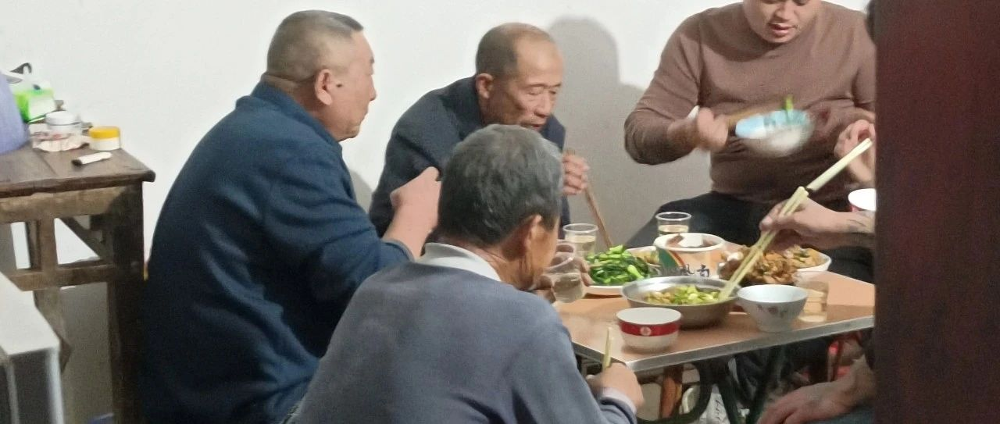

《化繭成蝶36》《流言蜚語父親的壓力》
做完跨性別手術，回來家修養的這段時間裡，對父親的壓力是最大的，他該如何面對這件事情，他該如何述說這件事情，他該怎麼樣面對親朋好友……
做了跨性別手術以後。最對不起的是我的父親，他的壓力太大了，他面對的事情太多了，我從來沒有看見父親哭泣，這一次在說我做跨性別手術的時候，淚流滿面，失聲痛哭。父親說，你做了跨性別這個手術，我這一個月都沒有休息好，你看看你做的這件事情。
我說爸，你說的我都知道。屁股在臭也割捨不了，親情是永遠割舍不斷的，打斷骨頭還連著筋……照顧好自己。
（以為做了跨性別手術，回來修養身體的時候，要被父親拳打腳踢一頓，父親只是冷冷的看了我一眼。這件事情我不知道要過多久，父親的心裡才能平靜下來。可能需要三年五載，也可能需要一輩子。）
人活一世，草木一春。
生是偶然，走之必然。
人活著是為了什麼？
人生的價值是什麼？
出門歡喜，進門愁。
敬煙送酒，解千憂。
自己有自己的追求，
老天错给了男儿身，
自己把自己解救出来，释放出来，
得到自己想要的。（摘錄）